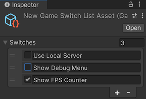

Version: 2021.3+
The ListView control is the most efficient way to create lists. To bind to a list with ListView, set the binding path of the ListView to the name of the property that contains the list.
This example demonstrates how to bind to a list with ListView.
The example creates a list of toggles and binds the list to an underlying list of GameSwitch objects.

You can find the completed files that this example creates in this GitHub repository.
This guide is for developers familiar with the Unity Editor, UI Toolkit, and C# scripting. Before you start, get familiar with the following:
ListViewCreate a GameSwitch object and a serialized object that has a list of GameSwitch objects as a property.
Assets folder (Project tab) More infobind-to-list to store all your files.GameSwitchListAsset.cs and replace its contents with the following:using System;
using System.Collections.Generic;
using System.Diagnostics;
using UnityEngine;
[CreateAssetMenu(fileName = "GameSwitchListAsset.asset", menuName = "GameSwitchListAsset")]
public class GameSwitchListAsset : ScriptableObject
{
public List<GameSwitch> switches = new();
public void Reset()
{
switches = new List<GameSwitch>{
new() { name = "Use Local Server", enabled = false },
new() { name = "Show Debug Menu", enabled = false },
new() { name = "Show FPS Counter", enabled = true },
};
}
public bool IsSwitchEnabled(string switchName) => switches.Find(s => s.name == switchName).enabled;
[Serializable]
public struct GameSwitch
{
public bool enabled;
public string name;
}
}
Create the template of the list item. Each item contains a Toggle and a TextField. Create the ListView UI, and set the item template to the template of the list item.
Create a UXML file named game_switch.uxml with the following contents:
<ui:UXML xmlns:ui="UnityEngine.UIElements" editor-extension-mode="False">
<ui:Box style="flex-direction: row;">
<ui:Toggle binding-path="enabled"/>
<ui:TextField binding-path="name" readonly="false" style="flex-grow: 1;"/>
</ui:Box>
</ui:UXML>
Create a UXML file named game_switch_list_editor.uxml and with the following contents:
<ui:UXML xmlns:ui="UnityEngine.UIElements" editor-extension-mode="False">
<ui:ListView virtualization-method="DynamicHeight" reorder-mode="Simple" binding-path="switches" show-add-remove-footer="true" show-foldout-header="true" header-title="" reorderable="true" item-template="game_switch.uxml" allow-add="true">
</ui:ListView>
</ui:UXML>
Create a custom Editor window that can create an asset with a list of toggles. Bind the toggle list to the GameSwitch list by setting the binding-path attribute of the UI Document to the property name of the GameSwitch list, which is switches.
From the menu, select Assets > Create > UIToolkitExamples > GameSwitchList. This creates an asset named New Game Switch List Asset.
Create a folder named Editor.
In the Editor folder, create a C# script named GameSwitchListEditor.cs with the following contents:
using System.Collections.Generic;
using UnityEditor;
using UnityEngine;
using UnityEngine.UIElements;
using UnityEditor.UIElements;
public class ListViewBindingExample : EditorWindow
{
[SerializeField]
private VisualTreeAsset m_VisualTreeAsset = default;
[SerializeField]
private GameSwitchListAsset gameSwitchList;
[MenuItem("UI Toolkit Examples/ListView SerializedObject Binding Example")]
public static void ShowExample()
{
ListViewBindingExample wnd = GetWindow<ListViewBindingExample>();
wnd.titleContent = new GUIContent("ListView Binding SerializedObject Example");
}
public void CreateGUI()
{
VisualElement root = rootVisualElement;
m_VisualTreeAsset.CloneTree(root);
var listView = root.Q<ListView>();
if (listView != null && gameSwitchList != null)
{
// Set the items source.
listView.itemsSource = gameSwitchList.switches;
// Bind the ListView to the GameSwitchListAsset serialized object.
listView.Bind(new SerializedObject(gameSwitchList));
}
}
}
Select GameSwitchListEditor.cs in the Project window.
In the InspectorA Unity window that displays information about the currently selected GameObject, asset or project settings, allowing you to inspect and edit the values. More info
See in Glossary panel, do the following:
game_switch_list_editor.uxml
GameSwitchListAsset.asset .switches property of the GameSwitchListAsset object changes, and vice versa.